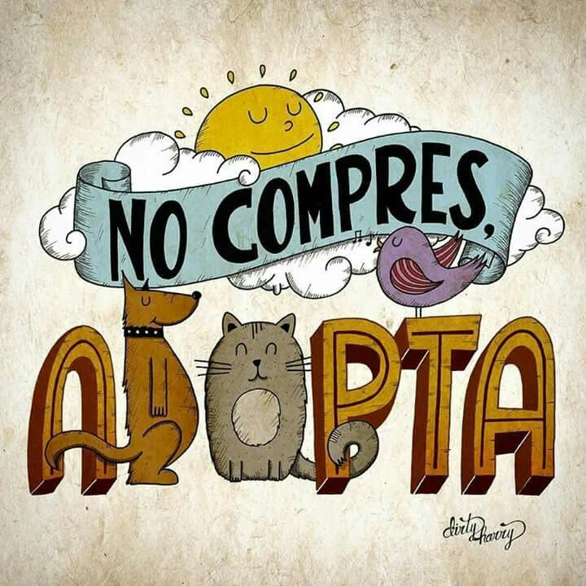
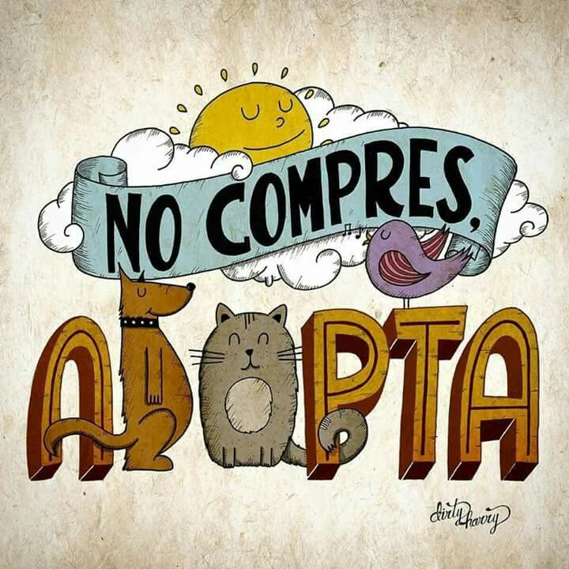

Formulario de Adopción
¿Has echado un vistazo a los animales que tenemos en adopción y quieres brindarle un hogar a alguno de ellos? ¡Rellena este formulario!
Adopta ¡Cientos de animales están esperando tu ayuda! Estamos en búsqueda de adoptantes, voluntarios o donaciones para poder seguir con la causa. ¿Estás interesado? ¡Rellena nuestros formularios y nos pondremos en contacto contigo!
¿Has echado un vistazo a los animales que tenemos en adopción y quieres brindarle un hogar a alguno de ellos? ¡Rellena este formulario!
Adopta ¿Te interesa trabajar mano a mano ayudando a encontrarles una vida mejor a un montón de peluditos? Entonces, ¡eres de los nuestros! Únete a nosotros y trabaja de forma voluntaria en el refugio.
Voluntariado¿Quieres ayudar al refugio pero no puedes adoptar ni trabajar en el refugio? Tal vez puedes aportar una ayuda económica. Sabemos que no todo el mundo puede donar grandes cantidades, ¡pero todo esfuerzo cuenta! No importa la cantidad, lo importante es poder salvar a un peludo más.
Donar